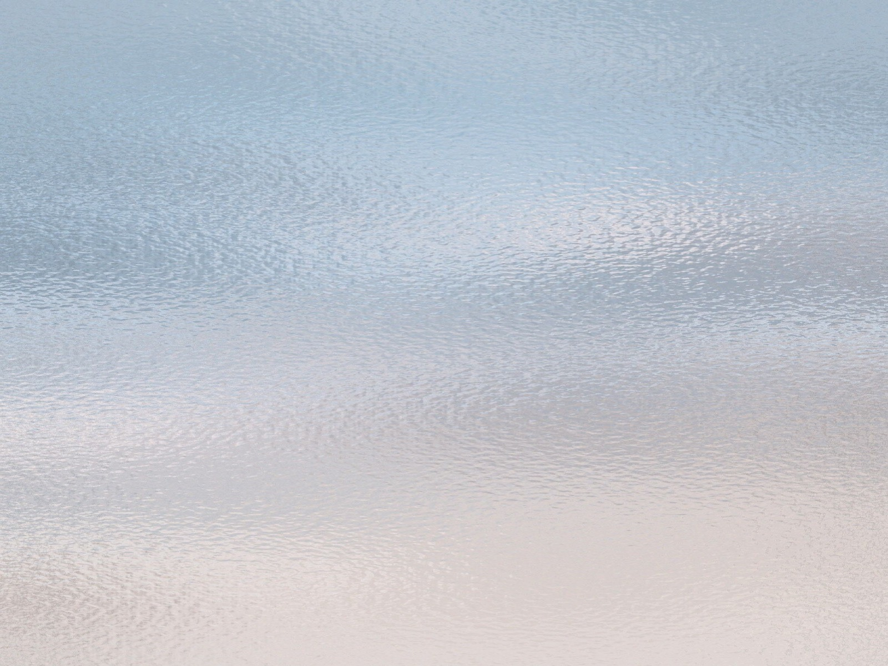
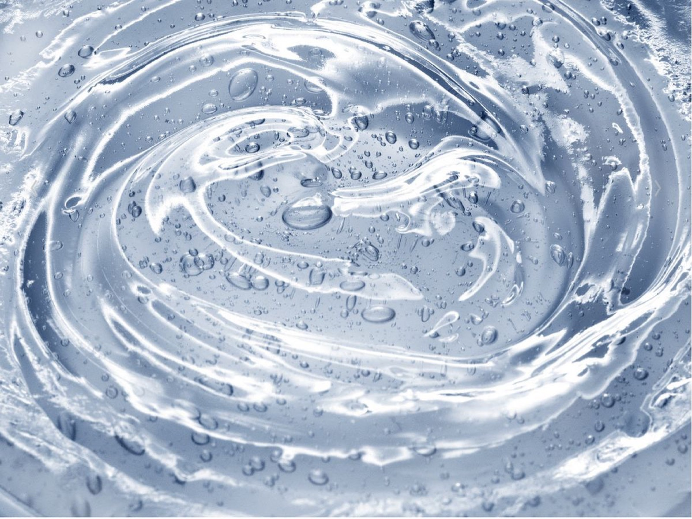

Texture Review
Review candidates here before any future live texture swap. This page includes the most relevant local Frutiger / clear-gel sources plus the current exported profiles.
Compare for three things: whether the asset feels glassy instead of matte, whether the light feels aqua/cyan instead of beige, and whether the structure stays soft enough not to fight the UI.
Compositing Lab
Use these controls to compare stack behavior before touching live popup CSS. Goal: isolate material quality from decorative overlays.
Most Relevant Source Textures


Current Exported Profiles


Base = main shell atmosphere
Wave = secondary aqua ribbon overlay
Gloss = higher-specular clear gel reference
Alt = candidate for next review pass